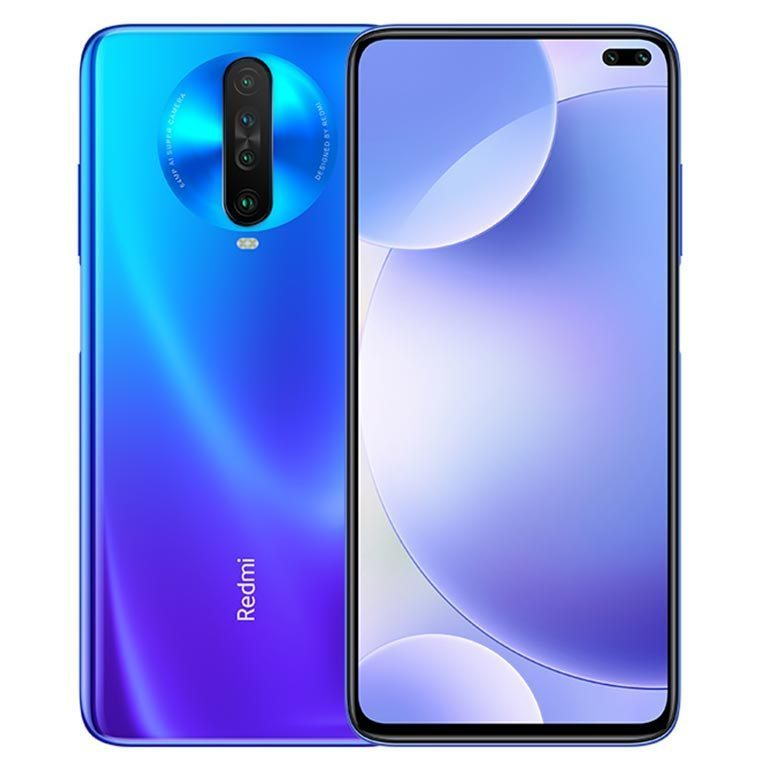

Xiaomi Poco X2

Spesifikasi :
- Layar: IPS LCD, 6.67 inches
- Chipset: Qualcomm SDM730 Snapdragon 730G (8 nm)
- CPU: Octa-core (2×2.2 GHz Kryo 470 Gold & 6×1.8 GHz Kryo 470 Silver)
- GPU: Adreno 618
- RAM: 6 GB, 8 GB
- Memori Internal: 64 GB, 128 GB
Ponsel kelas menengah Xiaomi ini hadir membawa spesifikasi yang cukup menarik. Dengan uang tiga jutaan, Anda sudah bisa membawa pulang ponsel yang bertenaga ini.
Dapur pacu Poco X2 ditenagai oleh chipset kelas gaming yang dibuat dengan pabrikasi 8 nm dan menawarkan kecepatan hingga 2,2 GHz. Kapasitas RAM dan ROM-nya sendiri dimulai dari 6/64 GB hingga 8/256 GB.
Tampilan adalah satu nilai jual dari HP ini. Panel IPS Full HD-nya dilengkapi dengan sejumlah dukungan modern, yaitu GG5 untuk proteksi, HDR 10 dan tampilan 120 Hz untuk pengalaman visual yang luar biasa, dan tingkat kecerahan 500 nits yang bagus untuk pemakaian di luar ruangan.
Sektor-sektor lain dari HP ini juga dibuat cukup wah, seperti pada kamera misalnya. Selain membawa pengaturan kamera yang cukup bagus di bagian belakang, Poco X2 juga hadir dengan pengaturan kamera depan ganda yang bisa diandalkan dengan baik untuk selfie.
~BACK~